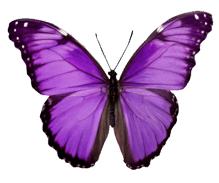
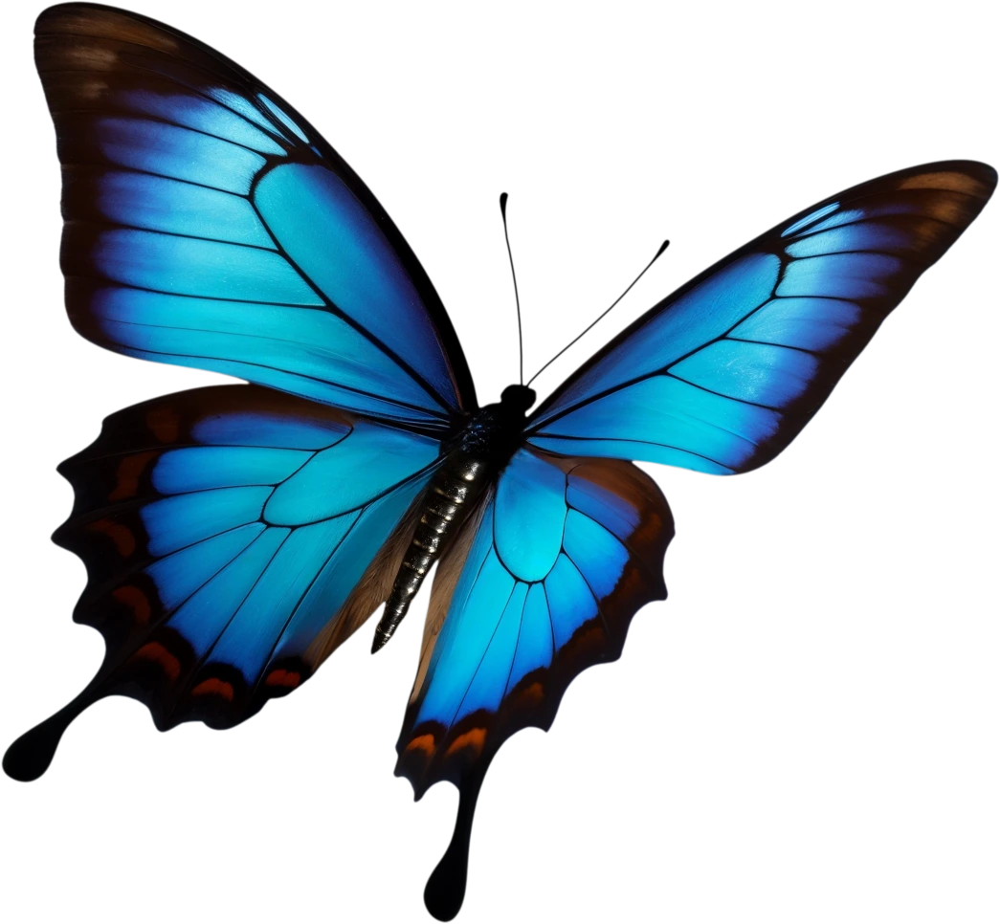
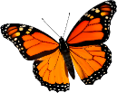
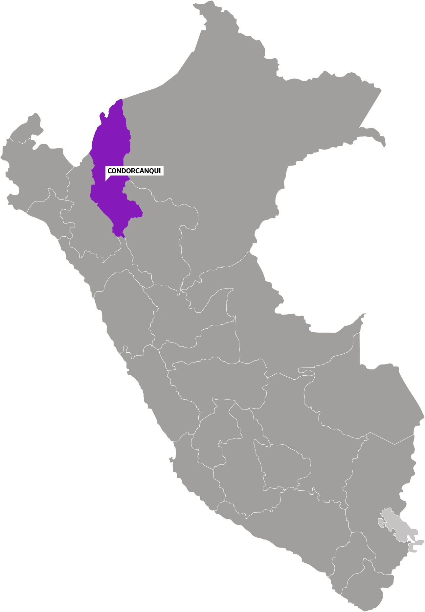
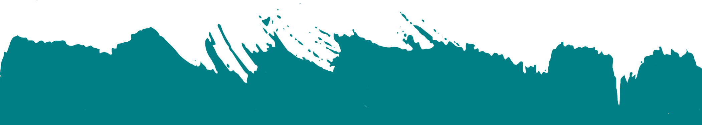
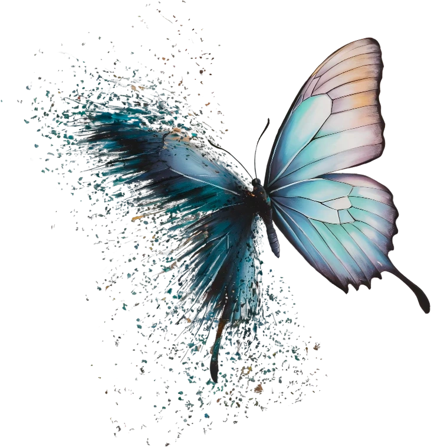
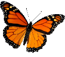
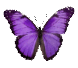

de sobrevivientes a lideresas,
un legado de transformación en la comunidad awajún

En comunidades de la Amazonía peruana, donde la violencia y el silencio han marcado generaciones, mujeres Awajún han decidido romper el círculo. Con el apoyo de brigadistas y lideresas trabajan para proteger a las niñas, educar a las comunidades y cambiar el futuro de sus pueblos.

el bosque protector
En lo más profundo de la Amazonía, donde los ríos cantan y los árboles susurran secretos, la niñez vive temerosa, amenazada por las sombras frías y silenciosas que han arrebatado sueños y quebrado vidas. Pero entre las raíces del bosque, mujeres fuertes han despertado como guardianas de un nuevo futuro. Ellas cuidan los capullos frágiles y enseñan a la niñez a alzar el vuelo, rompiendo el ciclo que las mantenía atrapadas en la oscuridad.
wika antunjame

yo te escucho
Play

Contexto - problemática
1. Geografía y accesibilidad
Condorcanqui es una provincia ubicada en el extremo norte del departamento de Amazonas. La capital, Santa María de Nieva, conecta de manera limitada las comunidades por vía terrestre, por lo que el transporte fluvial sigue siendo crucial. Los ríos Marañón, Nieva y Cenepa son arterias vitales para la movilidad, sin embargo las condiciones climáticas, exacerbadas por el fenómeno de El Niño, complican el desplazamiento. Este aislamiento geográfico incrementa la vulnerabilidad de su población, dificultando el acceso a servicios básicos como salud, justicia y educación.
2. Población y situación social
Condorcanqui tiene 65,000 habitantes (según proyección de Censo 2017), y está conformada mayoritariamente por comunidades indígenas Awajún y Huambisa. Estas comunidades enfrentan índices alarmantes de pobreza y exclusión: el 77% carece de acceso a agua potable, el 30% no cuenta con desagüe, y el 94% no tiene electricidad. Además, las tasas de analfabetismo son preocupantes: en mujeres alcanza un 30% y en niños de entre 0 a 12 años, un 45%. Estas carencias no solo reflejan una brecha de desigualdad estructural, sino que también perpetúan un entorno de vulnerabilidad frente a la violencia de género y la exclusión social.
3. La violencia de género como problemática estructural
La violencia de género es una realidad devastadora en Amazonas. En los últimos 7 años, según el Ministerio de la Mujer y Poblaciones Vulnerables (MIMP) se registraron 12, 629 casos de violencia en los Centro de Emergencia Mujer (CEM) de la provincia. De esos casos, 4562 involucraron a menores de edad. Por su parte, el CEM del distrito de Condorcanqui atendió 301 casos desde enero hasta octubre de 2024, afectando principalmente a niñas y adolescentes de 0 a 17 años.
Sin embargo, existe un subregistro significativo, ya que muchas mujeres y menores no denuncian debido a barreras lingüísticas, acuerdos informales en las comunidades y la falta de acceso a servicios legales y médicos. Solo el distrito de Nieva cuenta con una comisaría para denuncias, dejando a distritos como El Cenepa y Río Santiago en un estado de total desprotección.


¿Cómo es vivir en Condorcanqui?
Te mostramos tres situaciones en las que podrás darte cuenta de lo difícil que es vivir sin acceso a la justicia.
las lideresas awajún
fortaleza
Carmen Samaniego
(intérprete)
resiliencia

Gaby Tseje
(defensora comunitaria)
compromiso

Silvia Shimbuka
(lideresa)
liderazgo
Rossmery Pioc
(lideresa)
esperanza
Sharon Alberca
(psicóloga brigadista)
“Así como ustedes han aprendido, también las generaciones que vienen lo harán”
fortaleza
Carmen Samaniego
(intérprete)
Carmen Samaniego es intérprete Awajún y trabaja con el UNFPA en Condorcanqui, su habilidad con el idioma originario la llevó a asumir el desafío de conectar a las mujeres de su comunidad con servicios que les eran inaccesibles debido a las barreras lingüísticas y sociales. Desde temprana edad, participó en talleres de formación y empoderamiento que despertaron su interés por los derechos de las mujeres y la justicia.
Cada caso que Carmen enfrenta en su labor es un recordatorio de las injusticias que atraviesan las mujeres de su tierra: niñas obligadas a convivir con sus agresores, madres abandonadas a su suerte, autoridades que ignoran o minimizan estas situaciones y una comunidad atrapada entre el olvido y la resignación. Ella no solo interpreta, sino que también guía y acompaña a las mujeres en sus procesos legales y emocionales, fortaleciendo una red de apoyo comunitaria.
Para Carmen, la defensa de las mujeres Awajún es una misión personal que trasciende su rol profesional. Inspirada por las historias de resistencia de las mujeres de su comunidad, aboga por la sororidad y la educación como herramientas para romper el círculo de violencia. Su esfuerzo no solo busca cambiar la vida de las víctimas, sino también empoderar a las futuras generaciones para construir una comunidad más justa y segura.
“Poco a poco, la gente entiende. Ya no me atacan, ya no nos callamos. Las mujeres están aprendiendo, denunciando, cambiando todo”
resiliencia
Gaby Tseje
(defensora comunitaria)
Gaby Tseje creció enfrentando el rechazo de una comunidad que no la comprendía. Desde pequeña, entendió que su identidad desafiaba las normas establecidas, pero convirtió esa diferencia en su mayor fortaleza. A los diez años, dejó su hogar en busca de un espacio donde pudiera ser ella misma, lamentablemente, en ese cruel camino enfrentó la soledad, la explotación y el abuso. En medio de estas adversidades, encontró su vocación en la cosmetología, una actividad que le permitió no solo construir una vida independiente, sino también regresar a su comunidad con una misión.
Con el tiempo, Gaby se convirtió en una defensora natural de las mujeres y niñas Awajún. Inspirada por su propia historia de lucha, comparte su aprendizaje para empoderar a quienes se sienten atrapadas por la violencia y la desigualdad. “Aprendan algo, estudien, porque no pueden depender de nadie”, les dice, convencida de que la independencia económica y el conocimiento son claves para romper el círculo de violencia. A través de su experiencia y su conexión con iniciativas como las de UNFPA, Gaby no solo es símbolo de resiliencia, sino que lidera un cambio profundo en su comunidad.
Hoy, Gaby Tseje es una lideresa que lucha por un futuro donde las mujeres puedan elegir sus caminos sin miedo ni opresión. Aunque las sombras del pasado a veces la persiguen, sigue adelante con una determinación inquebrantable, porque sabe que su historia no es solo suya.
“No es solo tener un ingreso. Aprende algo y regresa a tu comunidad. Así apoyas a tu familia y enseñas a otras que pueden salir adelante”.
compromiso
Silvia Shimbuka
(lideresa)
Silvia Shimbuka es una madre Awajún que sabe el significado de tocar fondo. Cuando su esposo la abandonó con sus seis hijos y le negó el sustento económico, ella pensó en rendirse y alejarse de todo. Sin embargo, el amor y la responsabilidad por los suyos la impulsó a luchar. “Si yo los dejo, estarán mal y tristes”, se dijo, y con esa decisión comenzó a reconstruir su vida desde las cenizas.
Su camino no fue fácil. Silvia encontró apoyo en talleres organizados por iniciativas como el Servicio de Atención Rural (SAR), Kallpa y el UNFPA. Ahí no solo aprendió sobre sus derechos, sino que también descubrió que era capaz de generar sus propios recursos. Empezó a trabajar en programas como Cuna Más y a crear artesanías que vende para complementar sus ingresos. Poco a poco, dejó de depender de la ayuda externa y se convirtió en un ejemplo para otras mujeres de su comunidad.
Así fue como Silvia se convirtió en una lideresa que alienta a otras mujeres a no quedarse atrapadas en la violencia o la dependencia económica. Su mensaje es claro: el cambio comienza con la educación y la determinación de buscar oportunidades, incluso en las circunstancias más difíciles. Su historia es un recordatorio de que, aunque el camino sea duro, siempre es posible volver a empezar.
“No es solo tener un ingreso. Aprende algo y regresa a tu comunidad. Así apoyas a tu familia y enseñas a otras que pueden salir adelante”.
liderazgo
Rossmey Pioc
(lideresa)
Silvia Shimbuka es una madre Awajún que sabe el significado de tocar fondo. Cuando su esposo la abandonó con sus seis hijos y le negó el sustento económico, ella pensó en rendirse y alejarse de todo. Sin embargo, el amor y la responsabilidad por los suyos la impulsó a luchar. “Si yo los dejo, estarán mal y tristes”, se dijo, y con esa decisión comenzó a reconstruir su vida desde las cenizas.
Su camino no fue fácil. Silvia encontró apoyo en talleres organizados por iniciativas como el Servicio de Atención Rural (SAR), Kallpa y el UNFPA. Ahí no solo aprendió sobre sus derechos, sino que también descubrió que era capaz de generar sus propios recursos. Empezó a trabajar en programas como Cuna Más y a crear artesanías que vende para complementar sus ingresos. Poco a poco, dejó de depender de la ayuda externa y se convirtió en un ejemplo para otras mujeres de su comunidad.
Así fue como Silvia se convirtió en una lideresa que alienta a otras mujeres a no quedarse atrapadas en la violencia o la dependencia económica. Su mensaje es claro: el cambio comienza con la educación y la determinación de buscar oportunidades, incluso en las circunstancias más difíciles. Su historia es un recordatorio de que, aunque el camino sea duro, siempre es posible volver a empezar.
"Es necesario curar nuestras propias heridas para poder ayudar a otras mujeres. Si no cuidamos nuestras emociones, no podremos darles la fuerza que necesitan para salir adelante."
esperanza
Sharon Alberca
(psicóloga brigadista)
Sharon Alberca es psicóloga y brigadista en Condorcanqui. Desde el primer momento en que se encuentra con una sobreviviente, Sharon busca construir un espacio de confianza. “Yo te creo” y “Estás a salvo” son frases que usa como herramientas para romper las barreras emocionales de las mujeres que han vivido años de silencio. Su trabajo no se limita a escuchar; también acompaña, orienta y ayuda a construir un nuevo camino.
Su labor no es fácil. Cada caso trae consigo una carga emocional que ella y sus compañeras deben aprender a manejar. Junto al equipo, participa en sesiones de autocuidado y en talleres comunitarios para sensibilizar a la población, especialmente en zonas alejadas donde las mujeres suelen estar más desprotegidas. A través de estos espacios, Sharon conecta con las sobrevivientes y siembra en ellas la semilla del cambio.
Para la brigadista, cada caso atendido es una victoria personal y comunitaria. Su misión no termina con el apoyo psicológico; también lucha por sensibilizar a las comunidades, cuestionar las normas que perpetúan la violencia y enseñar a las mujeres y niñas que tienen derechos. “Es un trabajo de hormiga, pero poco a poco estamos transformando realidades”, asegura. Su compromiso y empatía han hecho de ella una pieza clave en el esfuerzo por construir un futuro más justo para las mujeres de Condorcanqui.